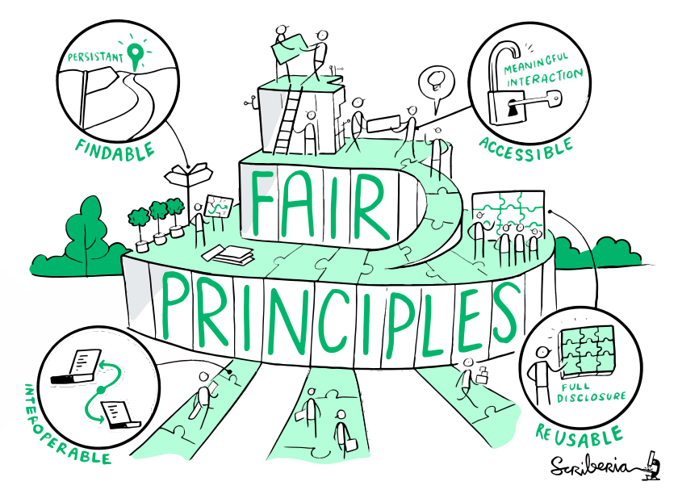

Own project hints#
No matter if you are just starting a new project or already have found suitable tools for your task or maybe even written your own tools. Just moving your workflow or script to the supercomputer does not make it run faster. But there is some things that you can do.
Starting a new project#
When you start a new project and don’t yet know how you are going to approach the task, spend a little time to investigate:
Which tools are able to solve the kind of task you have?
Google your task or ask experienced colleagues or servicedesk@csc.fi for guidance
Once you found some, if it comes with tutorials, do at least one
This will likely be the fastest way forward
Read the manual/instructions
Consider different ways your software can be run
Fastest vs. ease-of-use and compute power/memory/disk demands
When you’ve found the software you want to use, check if it is available at CSC as a pre-installed optimized version
If it is, check if it has an example batch script
Otherwise, use a general batch job script template
If it is not, check if you can install it yourself or ask servicedesk@csc.fi for help.
Start simple and gradually use more complex approaches if needed
Try first running interactively (not on a login node) to check how the tool performs on actual input data
Use the
topcommand to get rough estimate of memory use, etc.Before large runs, it’s a good idea to do a smaller trial run
Check that results are as expected
Check the resource usage after the test run and adjust accordingly
If developers provide some test or example data, run it first and make sure results are correct
You can use the
--partition=testto check that your batch job script is correct and everything is interpreted correctlyLimits : 15 min, 2 nodes
Job turnaround usually very fast even if machine is “full”
Can be useful to spot typos, missing files, etc. before submitting a job that migh stay waiting in the queue
How many cores and memory to allocate?
This depends on many things, so you have to try it out
Check the output of the
seffcommand to ensure that CPU and memory efficiencies are as high as possibleIt’s OK if a job is (occasionally) killed due to insufficient resource requests: just adjust and rerun/restart
It’s much worse to always run with excessively large requests “just in case”
If you can’t find suitable software, consider writing your own code
FAIR research code#
{kind=link}

The Turing Way project illustration by Scriberia. Used under a CC-BY 4.0 licence. DOI: 10.5281/zenodo.3332807.#
Following “good enough” practices for FAIR research code will not only help you rerunning your code again when reviewers would like you to “just run XX again” half a year after you moved on to the next project. It will also make your code more reproducible for others:
Version control
Clean directory structure
Reproducible computing environment
Use existing modules
Know your dependencies
Containers
Documentation with code, minimum: README
Modularity -> simplifies reusability and making things parallel
License
Share your code, data, results
You can find self-study materials on these topics from the CodeRefinery project lessons.
Running own scripts on the supercomputer#
Keep track of your script versions by using a version control system, like Git(Hub). This also simplifies collaboration and synchronising your scripts on different computers.
Reminder for Puhti
Keep scripts in
/projappl/project_200xxxx/Keep data in
/scratch/project_200xxxx/during processing, Allas for longer term storageKeep personal configuration scripts in
/users/cscusername/
When moving a script from your own computer to Puhti, take care of any hard-coded file dependencies (e.g. /my/home/dir/file.txt ). It is not recommended to have hard-coded file paths in your scripts, instead, provide them as command line input to your script or make use of configuration files. No matter where you input your file paths, always make sure that you have the actual data files also available on the supercomputer. Also check that all used packages are available on the supercomputer, on Puhti, e.g. within the geoconda module or the r-env module.
Optimizing the performance of your own code#
You can use profiling tools to find out how much time is spent in different parts of the code
Docs CSC: Performance analysis
Profiling on LUMI When the computing bottlenecks are identified, try to figure out ways to improve the code.
Advanced topic: Developing scripts remotely
Instead of developing code on your local machine (e.g. laptop) and moving it to the supercomputer for testing, you can also consider to use a local editor and push edited files directly into the remote system via SSH. This works for example with an IDE like Visual Studio Code or a text editor like Notepad++. Follow these detailed instructions to set them up. Note that Visual Studio Code and Jupyter Notebooks are also available through the Puhti web interface